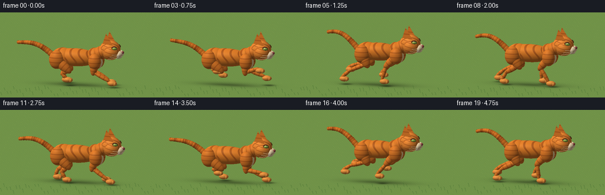
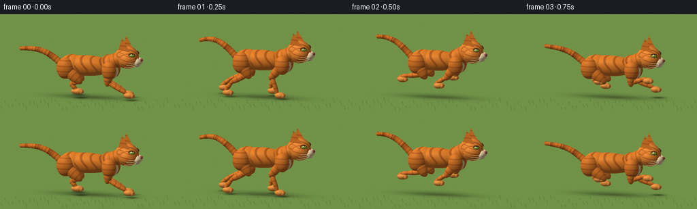
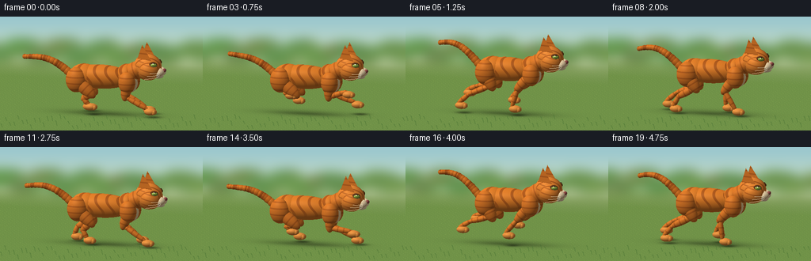
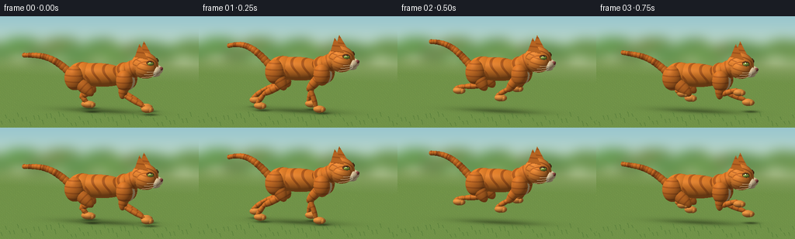

CODING AGENTS AS PIXEL WORLD MODELS
traex/GPT-6.1-Sol · instance_preservation_0003
点击播放 · 原生 RGB 像素
逐轮保存的候选
回放视频、检查图与代码变化。
每份候选均可单独播放。实际图片检查记录在下方工具轨迹中。
候选 01播放与检查图
点击播放 · 原生 RGB 像素


展开代码变化
--- 上一保存版本
+++ 本次保存版本
@@ -0,0 +1,330 @@
+"""Text-only, deterministic procedural animation of an orange tabby running.
+The renderer below uses only mathematical ray/primitive intersections and PIL.
+"""
+from pathlib import Path
+import json, math
+import numpy as np
+from PIL import Image, ImageDraw, ImageFilter
+from artifact_io import save
+
+ROOT = Path(__file__).resolve().parent
+SPEC = json.loads((ROOT / 'task_spec.json').read_text())
+W, H, SS = SPEC['width'], SPEC['height'], 2
+RW, RH = W*SS, H*SS
+rng = np.random.default_rng(19)
+
+def unit(v):
+ v=np.asarray(v,dtype=float)
+ return v/np.linalg.norm(v)
+
+# A locked, side-on tracking camera, slightly above and in front of the cat.
+D = unit([-2.3,-1.5,-8.0])
+RIGHT = unit(np.cross(D,[0,1,0]))
+UP = unit(np.cross(RIGHT,D))
+TARGET=np.array([-.10,1.14,0.0])
+SPAN=3.24
+xx,yy=np.meshgrid((np.arange(RW)+.5-RW/2)*SPAN/RH,
+ (RH/2-np.arange(RH)-.5)*SPAN/RH)
+O=TARGET + xx[...,None]*RIGHT+yy[...,None]*UP-D*8
+L=unit([-3.5,6,5])
+V=-D
+
+def project(p):
+ q=np.asarray(p)-TARGET
+ return ((np.dot(q,RIGHT)*RH/SPAN+RW/2),(-np.dot(q,UP)*RH/SPAN+RH/2))
+
+def background(frame):
+ # A soft, sunlit meadow. Its changing horizontal positions provide parallax.
+ a=np.zeros((RH,RW,3),np.float32)
+ for y in range(RH):
+ v=y/RH
+ if v<.42:
+ f=v/.42
+ c=np.array([150,197,207])*(1-f)+np.array([220,230,195])*f
+ else:
+ f=(v-.42)/.58
+ c=np.array([143,166,103])*(1-f)+np.array([87,127,65])*f
+ a[y]=c
+ im=Image.fromarray(np.uint8(a))
+ dr=ImageDraw.Draw(im,'RGBA')
+ t=frame/SPEC['fps']
+ # Diffuse distant shrub silhouettes and bright gaps, not distracting detail.
+ for i in range(40):
+ x=(i*49.7-t*15)%(RW+150)-75
+ y=94+14*np.sin(i*3.4)
+ r=28+15*np.sin(i*1.7)**2
+ dr.ellipse((x-r,y-r*.7,x+r,y+r*.5),fill=(92+i%4*8,134+i%5*5,77,190))
+ im=im.filter(ImageFilter.GaussianBlur(7*SS))
+ return np.array(im,dtype=np.float32)
+
+# Each primitive has an explicit coordinate frame, so its coat pattern moves with it.
+def ell(parts,c,r,mat='fur',axis=None,seed=0):
+ rot=np.eye(3)
+ if axis is not None:
+ y=unit(axis)
+ z=unit(np.cross([1,0,0] if abs(y[0])<.9 else [0,0,1],y))
+ x=unit(np.cross(y,z))
+ rot=np.stack([x,y,z],axis=1)
+ parts.append(('ell',np.asarray(c,float),np.asarray(r,float),rot,mat,seed))
+
+def segment(parts,a,b,r1,r2=None,mat='fur',seed=0):
+ a,b=np.array(a),np.array(b)
+ r2=r1 if r2 is None else r2
+ ell(parts,(a+b)/2,[r1,np.linalg.norm(b-a)/2+r2,r2],mat,b-a,seed)
+
+def tri(parts,a,b,c,mat):
+ parts.append(('tri',np.array(a,float),np.array(b,float),np.array(c,float),mat,0))
+
+def spline(keys,p):
+ # periodic cubic interpolation through anatomically chosen gait poses
+ pos=p*len(keys); k=int(np.floor(pos)); f=pos-k
+ p0=np.array(keys[(k-1)%len(keys)]); p1=np.array(keys[k%len(keys)])
+ p2=np.array(keys[(k+1)%len(keys)]); p3=np.array(keys[(k+2)%len(keys)])
+ return .5*((2*p1)+(-p0+p2)*f+(2*p0-5*p1+4*p2-p3)*f*f+(-p0+3*p1-3*p2+p3)*f**3)
+
+PAW_F=[(1.31,.15),(1.01,.115),(.39,.11),(-.02,.31),(.39,.62),(1.19,.65)]
+PAW_H=[(-.41,.41),(-.38,.11),(-1.05,.12),(-1.50,.20),(-1.27,.59),(-.59,.68)]
+
+def cat(frame):
+ t=frame/SPEC['fps']; ph=(t*1.12)%1
+ body_y=1.08+.12*np.sin(2*np.pi*(ph-.16))
+ stretch=1+.065*np.cos(2*np.pi*(ph-.02))
+ shift=.04*np.sin(t*.7)
+ parts=[]; whiskers=[]
+ def P(x,y,z): return [x*stretch+shift,y,z]
+ # A long flexible tail, with a softly elevated, curved tip.
+ tail=[]
+ for j in range(14):
+ s=j/13
+ tail.append(P(-.87-1.36*s,body_y+.03+.63*s+.22*np.sin(np.pi*s)+.13*s*np.sin(2*np.pi*ph-2*s),
+ -.02+.10*np.sin(np.pi*s+2*np.pi*ph)*s))
+ for j in range(13):
+ r=.12-.057*j/13
+ segment(parts,tail[j],tail[j+1],r,mat='tail',seed=j)
+ ell(parts,tail[-1],[.065,.07,.065],'tail',seed=13)
+
+ # The far pair is naturally occluded by the torso and the near pair.
+ leg_locations=[]
+ for side in [-1,1]:
+ z=side*.245
+ for front in [False,True]:
+ p=(ph+(0 if side==1 else .115)+(0 if front else .10))%1
+ pawxy=spline(PAW_F if front else PAW_H,p)
+ paw=np.array(P(pawxy[0],max(.115,pawxy[1]),z+.015*side))
+ if front:
+ shoulder=np.array(P(.68,body_y-.025,z))
+ # backward-pointing elbow, then long foreleg
+ elbow=np.array(P(.47+.20*np.cos(2*np.pi*(p+.1)),body_y-.43,z))
+ segment(parts,shoulder,elbow,.145,.13,seed=1)
+ segment(parts,elbow,paw+np.array([-.065,.075,0]),.075,.081,seed=2)
+ ell(parts,shoulder,[.245,.32,.205],seed=1)
+ else:
+ hip=np.array(P(-.73,body_y-.01,z))
+ knee=np.array(P(-.42+.12*np.cos(2*np.pi*p),body_y-.38,z+.015*side))
+ hock=(knee+paw)*.5+np.array([-.20,.035,0])
+ ell(parts,hip,[.30,.36,.235],seed=3)
+ segment(parts,hip,knee,.19,.17,seed=3)
+ segment(parts,knee,hock,.102,.085,seed=4)
+ segment(parts,hock,paw+np.array([-.055,.07,0]),.073,.075,seed=5)
+ # Rounded feline paws, subtle toes, no human-like hands.
+ ell(parts,paw+[.025,.005,0],[.18,.105,.128],'paw',seed=front+side)
+ for toe in range(3):
+ ell(parts,paw+[.138,-.008,(toe-1)*.067],[.060,.069,.045],'paw',seed=toe)
+ leg_locations.append(paw)
+
+ ell(parts,P(-.12,body_y+.075,0),[.89*stretch,.345,.335],'body')
+ ell(parts,P(-.56,body_y+.07,0),[.45,.355,.335],'body')
+ ell(parts,P(.61,body_y+.12,0),[.31,.36,.30],'body')
+ # Chest cream patch, visible towards the camera.
+ ell(parts,P(.77,body_y-.055,.10),[.17,.25,.24],'chest')
+ segment(parts,P(.71,body_y+.23,0),P(1.04,body_y+.38,0),.29,.26,'fur')
+ head=np.array(P(1.19,body_y+.42,0))
+ # Small pitching motion, tied to the gait, preserves one cat's face and proportions.
+ pitch=.045*np.sin(2*np.pi*ph)
+ def hp(q):
+ q=np.array(q,float)
+ x,y,z=q
+ return head+np.array([x*np.cos(pitch)-y*np.sin(pitch),x*np.sin(pitch)+y*np.cos(pitch),z])
+ ell(parts,head,[.405,.382,.345],'head')
+ ell(parts,hp([.08,-.055,.13]),[.32,.30,.30],'head')
+
+ # Thick triangular ears with smaller pink inset triangles.
+ for side in [-1,1]:
+ zz=side*.235
+ a=hp([-.235,.215,zz-.13]); b=hp([.20,.245,zz+.10]); c=hp([-.085,.68,zz+.026])
+ back=hp([-.24,.27,zz-.02])
+ tri(parts,a,b,c,'ear'); tri(parts,a,c,back,'fur'); tri(parts,b,back,c,'fur')
+ # inset raised just toward the viewing direction
+ cen=(a+b+c)/3
+ ia=a*.75+cen*.25+V*.005; ib=b*.75+cen*.25+V*.005; ic=c*.80+cen*.20+V*.005
+ tri(parts,ia,ib,ic,'inner_ear')
+
+ # Eyes on the forward-facing cheeks: green-gold irises and narrow pupils.
+ for side in [-1,1]:
+ q=[.225,.105,side*.255]
+ eye=hp(q); facing=unit([.63,.12,side*.85])
+ ell(parts,eye,[.129,.108,.09],'liner',axis=facing)
+ ell(parts,eye+facing*.034,[.106,.090,.065],'iris',axis=facing)
+ ell(parts,eye+facing*.085,[.029,.066,.021],'pupil')
+ ell(parts,eye+facing*.103+[-.024,.032,.013],[.019,.020,.012],'glint')
+ # Short muzzle and chin distinguish a cat from a fox or a dog.
+ ell(parts,hp([.325,-.13,.105]),[.19,.139,.168],'cream')
+ ell(parts,hp([.325,-.13,-.105]),[.19,.139,.168],'cream')
+ ell(parts,hp([.31,-.245,0]),[.155,.07,.16],'cream')
+ ell(parts,hp([.496,-.075,0]),[.055,.051,.086],'nose')
+ # Whisker dots on the visible cream cheek and mouth curves.
+ for x,y,z in [[.36,-.105,.244],[.40,-.16,.218],[.29,-.165,.250]]:
+ ell(parts,hp([x,y,z]),[.013,.013,.009],'freckle')
+ for side in [-1,1]:
+ for j in range(3):
+ a=hp([.39,-.12-j*.043,side*.14])
+ b=hp([.43,-.12-j*.06,side*(.37+j*.02)])
+ c=hp([.25-.075*j,-.08-j*.08,side*(.62+.03*j)])
+ whiskers.append((a,b,c))
+ mouth=[(hp([.491,-.11,0]),hp([.475,-.19,.015]),hp([.39,-.22,.14]))]
+ return parts,whiskers,mouth,body_y
+
+COLORS={
+ 'fur':(218,120,41),'body':(224,126,42),'head':(235,136,51),'tail':(212,115,37),
+ 'paw':(230,145,63),'ear':(217,127,56),'inner_ear':(213,142,131),
+ 'cream':(249,224,180),'chest':(242,211,155),'liner':(94,54,26),
+ 'iris':(149,176,70),'pupil':(17,24,16),'glint':(255,255,235),
+ 'nose':(147,77,72),'freckle':(108,73,43)}
+
+
+def intersect(obj):
+ kind,c,r,rot,mat,seed=obj
+ if kind=='ell':
+ oc=(O-c)@rot/r
+ d=(D@rot)/r
+ aa=np.dot(d,d)
+ bb=np.sum(oc*d,axis=-1)
+ cc=np.sum(oc*oc,axis=-1)-1
+ disc=bb*bb-aa*cc
+ hit=disc>=0
+ tt=(-bb-np.sqrt(np.maximum(disc,0)))/aa
+ hit &= tt>0
+ return np.where(hit,tt,np.inf)
+ a,b,c=c,r,rot
+ e1=b-a;e2=c-a
+ hh=np.cross(D,e2); den=np.dot(e1,hh)
+ if abs(den)<1e-10: return np.full((RH,RW),np.inf)
+ oc=O-a
+ u=np.sum(oc*hh,axis=-1)/den
+ q=np.cross(oc,e1)
+ v=np.sum(q*D,axis=-1)/den
+ tt=np.sum(q*e2,axis=-1)/den
+ hit=(u>=0)&(v>=0)&(u+v<=1)&(tt>0)
+ return np.where(hit,tt,np.inf)
+
+
+def render(frame):
+ img=background(frame)
+ parts,whiskers,mouth,by=cat(frame)
+ nearest=np.full((RH,RW),np.inf)
+ indexes=np.full((RH,RW),-1,int)
+ for i,obj in enumerate(parts):
+ tt=intersect(obj)
+ use=tt<nearest
+ nearest[use]=tt[use];indexes[use]=i
+ # Matte textured grass plane, with a soft moving contact shadow.
+ tg=-O[...,1]/D[1]
+ pp=O+D*tg[...,None]
+ ground=(tg>0)&(pp[...,2]<6)&(tg<nearest)
+ gx=pp[...,0]+frame/SPEC['fps']*2.9; gz=pp[...,2]
+ grassnoise=(np.sin(gx*37+gz*91)*np.sin(gx*77-gz*54)+.6*np.sin(gx*17+gz*41))
+ groundrgb=np.zeros((RH,RW,3),float)+[112,146,72]
+ groundrgb += grassnoise[...,None]*np.array([6,7,3])
+ # Fine pale grass flecks run under the cat at a constant pace.
+ fleck=(np.sin(gx*51+gz*8)>.96)&(np.sin(gz*47-gx*6)>.0)
+ groundrgb[fleck] += [17,17,8]
+ for ox,oz,sx,sz,amount in [(0,0,1.23,.48,.24),(.0,.10,.93,.22,.15)]:
+ sh=np.exp(-((pp[...,0]-ox)/sx)**2-((gz-oz)/sz)**2)*amount
+ groundrgb *= (1-sh[...,None])
+ # Small local shadows beneath landing paws.
+ for obj in parts:
+ if obj[0]=='ell' and obj[4]=='paw' and obj[1][1]<.28:
+ c=obj[1]
+ sh=.16*np.exp(-((pp[...,0]-c[0])/.19)**2-((gz-c[2])/.16)**2)
+ groundrgb *= 1-sh[...,None]
+ img[ground]=groundrgb[ground]
+ for i,obj in enumerate(parts):
+ mask=(indexes==i)&~ground
+ if not mask.any():continue
+ p=O[mask]+D*nearest[mask,None]
+ kind,c,r,rot,mat,seed=obj
+ if kind=='ell':
+ local=(p-c)@rot
+ normal=(local/(r*r))@rot.T
+ normal/=np.linalg.norm(normal,axis=-1)[:,None]
+ else:
+ local=p-c
+ normal=np.tile(unit(np.cross(r-c,rot-c)),(len(p),1))
+ if np.dot(normal[0],V)<0:normal=-normal
+ color=np.tile(np.array(COLORS[mat],float),(len(p),1))
+ if mat in ['fur','body','head','tail','paw','ear']:
+ # Coherent narrow bands and subtle hair grain, all attached to anatomy.
+ if mat=='body':
+ x,y,z=local.T
+ pattern=np.cos(x*19+2.2*np.sin(y*8)+.6*np.sin(z*13))
+ stripe=np.clip((pattern-.56)*4,0,1)
+ # Dark mackerel-tabby stripes only on the back and flanks.
+ stripe*=np.clip((y+.24)*5,0,1)
+ elif mat=='tail':
+ pattern=np.cos(local[:,1]*29+seed*1.75)
+ stripe=np.clip((pattern-.20)*2,0,1)
+ elif mat=='head':
+ x,y,z=local.T
+ pattern=np.cos(z*32+np.sin(y*15)+x*7)
+ stripe=np.clip((pattern-.62)*3,0,1)*np.clip((y+.01)*6,0,1)
+ # Side cheek stripes.
+ cheek=np.clip((np.cos(y*39+x*9)-.65)*3,0,1)*np.clip((abs(z)-.17)*12,0,1)
+ stripe=np.maximum(stripe,cheek*.8)
+ elif mat in ['fur','paw']:
+ stripe=np.clip((np.cos(local[:,1]*35+seed)-.6)*3,0,1)*.70
+ if mat=='paw':stripe*=.18
+ else:stripe=np.zeros(len(p))
+ stripecolor=np.array([141,66,22])
+ color=color*(1-stripe[:,None]*.60)+stripecolor*stripe[:,None]*.60
+ # Very fine warm grain gives the coat a satin/fur appearance at final size.
+ grain=np.sin(local[:,0]*291+local[:,1]*371+local[:,2]*197)*np.sin(local[:,2]*427-local[:,1]*209)
+ color += grain[:,None]*4
+ nl=np.maximum(0,normal@L)
+ rim=(1-np.maximum(0,normal@V))**3
+ shade=.48+.53*nl+.055*normal[:,1]
+ # A gentle reddish ambient bounce from shaded coat.
+ shaded=color*shade[:,None]
+ shaded+=rim[:,None]*np.array([16,10,4])
+ half=unit(L+V)
+ power=44 if mat in ['iris','pupil','nose','glint'] else 28
+ spec=np.maximum(0,normal@half)**power
+ amount=50 if mat in ['iris','pupil','nose'] else 12
+ shaded+=spec[:,None]*amount
+ if mat=='glint':shaded[:]=[255,253,230]
+ img[mask]=shaded
+ # Curved, subpixel whiskers and nose-to-mouth detail, in the near-side cheek plane.
+ im=Image.fromarray(np.uint8(np.clip(img,0,255)))
+ draw=ImageDraw.Draw(im,'RGBA')
+ for a,b,c in whiskers:
+ if a[2]<0:continue
+ points=[]
+ for u in np.linspace(0,1,24):
+ points.append(project((1-u)**2*a+2*(1-u)*u*b+u*u*c))
+ draw.line(points,fill=(252,235,197,185),width=1)
+ for a,b,c in mouth:
+ points=[project((1-u)**2*a+2*(1-u)*u*b+u*u*c) for u in np.linspace(0,1,20)]
+ draw.line(points,fill=(100,66,36,215),width=1)
+ # Soft, individually distributed foreground blades with their own parallax.
+ for k in range(52):
+ x=(k*31.79-frame/SPEC['fps']*93)%(RW+50)-25
+ y=RH-5-(k%7)*4
+ length=5+k%6
+ draw.line([(x,y),(x-2,y-length),(x-4,y-length-2)],fill=(71,112,50,110),width=SS)
+ return np.asarray(im.resize((W,H),Image.Resampling.LANCZOS).convert('RGB'))
+
+if __name__=='__main__':
+ frames=[]
+ for i in range(SPEC['frames']):
+ frames.append(render(i))
+ print(f'Rendered {i+1}/{SPEC["frames"]}',flush=True)
+ save(np.stack(frames).astype(np.uint8),ROOT)
候选 02播放与检查图
点击播放 · 原生 RGB 像素


展开代码变化
--- 上一保存版本
+++ 本次保存版本
@@ -230,7 +230,7 @@
# Matte textured grass plane, with a soft moving contact shadow.
tg=-O[...,1]/D[1]
pp=O+D*tg[...,None]
- ground=(tg>0)&(pp[...,2]<6)&(tg<nearest)
+ ground=(tg>0)&(pp[...,2]<6)&(pp[...,2]>-8.0)&(tg<nearest)
gx=pp[...,0]+frame/SPEC['fps']*2.9; gz=pp[...,2]
grassnoise=(np.sin(gx*37+gz*91)*np.sin(gx*77-gz*54)+.6*np.sin(gx*17+gz*41))
groundrgb=np.zeros((RH,RW,3),float)+[112,146,72]
@@ -247,6 +247,8 @@
c=obj[1]
sh=.16*np.exp(-((pp[...,0]-c[0])/.19)**2-((gz-c[2])/.16)**2)
groundrgb *= 1-sh[...,None]
+ distance_mix=np.clip((gz+8.0)/3.0,0,1)
+ groundrgb=img*(1-distance_mix[...,None])+groundrgb*distance_mix[...,None]
img[ground]=groundrgb[ground]
for i,obj in enumerate(parts):
mask=(indexes==i)&~ground
可观测工具轨迹
实际执行的命令与返回图片。
命令 1exit 0
/bin/bash -lc 'ls -la && cat prompt.txt && cat GENERATION_RULES.md && cat task_spec.json'
命令 2exit 0
/bin/bash -lc 'cat artifact_io.py'
命令 3exit 0
/bin/bash -lc "cat > generate.py <<'PY'
\"\"\"Text-only, deterministic procedural animation of an orange tabby running.
The renderer below uses only mathematical ray/primitive intersections and PIL.
\"\"\"
from pathlib import Path
import json, math
import numpy as np
from PIL import Image, ImageDraw, ImageFilter
from artifact_io import save
ROOT = Path(__file__).resolve().parent
SPEC = json.loads((ROOT / 'task_spec.json').read_text())
W, H, SS = SPEC['width'], SPEC['height'], 2
RW, RH = W*SS, H*SS
rng = np.random.default_rng(19)
def unit(v):
v=np.asarray(v,dtype=float)
return v/np.linalg.norm(v)
# A locked, side-on tracking camera, slightly above and in front of the cat.
D = unit([-2.3,-1.5,-8.0])
RIGHT = unit(np.cross(D,[0,1,0]))
UP = unit(np.cross(RIGHT,D))
TARGET=np.array([-.10,1.14,0.0])
SPAN=3.24
xx,yy=np.meshgrid((np.arange(RW)+.5-RW/2)*SPAN/RH,
(RH/2-np.arange(RH)-.5)*SPAN/RH)
O=TARGET + xx[...,None]*RIGHT+yy[...,None]*UP-D*8
L=unit([-3.5,6,5])
V=-D
def project(p):
q=np.asarray(p)-TARGET
return ((np.dot(q,RIGHT)*RH/SPAN+RW/2),(-np.dot(q,UP)*RH/SPAN+RH/2))
def background(frame):
# A soft, sunlit meadow. Its changing horizontal positions provide parallax.
a=np.zeros((RH,RW,3),np.float32)
for y in range(RH):
v=y/RH
if v<.42:
f=v/.42
c=np.array([150,197,207])*(1-f)+np.array([220,230,195])*f
else:
f=(v-.42)/.58
c=np.array([143,166,103])*(1-f)+np.array([87,127,65])*f
a[y]=c
im=Image.fromarray(np.uint8(a))
dr=ImageDraw.Draw(im,'RGBA')
t=frame/SPEC['fps']
# Diffuse distant shrub silhouettes and bright gaps, not distracting detail.
for i in range(40):
x=(i*49.7-t*15)%(RW+150)-75
y=94+14*np.sin(i*3.4)
r=28+15*np.sin(i*1.7)**2
dr.ellipse((x-r,y-r*.7,x+r,y+r*.5),fill=(92+i%4*8,134+i%5*5,77,190))
im=im.filter(ImageFilter.GaussianBlur(7*SS))
return np.array(im,dtype=np.float32)
# Each primitive has an explicit coordinate frame, so its coat pattern moves with it.
def ell(parts,c,r,mat='fur',axis=None,seed=0):
rot=np.eye(3)
if axis is not None:
y=unit(axis)
z=unit(np.cross([1,0,0] if abs(y[0])<.9 else [0,0,1],y))
x=unit(np.cross(y,z))
rot=np.stack([x,y,z],axis=1)
parts.append(('ell',np.asarray(c,float),np.asarray(r,float),rot,mat,seed))
def segment(parts,a,b,r1,r2=None,mat='fur',seed=0):
a,b=np.array(a),np.array(b)
r2=r1 if r2 is None else r2
ell(parts,(a+b)/2,[r1,np.linalg.norm(b-a)/2+r2,r2],mat,b-a,seed)
def tri(parts,a,b,c,mat):
parts.append(('tri',np.array(a,float),np.array(b,float),np.array(c,float),mat,0))
def spline(keys,p):
# periodic cubic interpolation through anatomically chosen gait poses
pos=p*len(keys); k=int(np.floor(pos)); f=pos-k
p0=np.array(keys[(k-1)%len(keys)]); p1=np.array(keys[k%len(keys)])
p2=np.array(keys[(k+1)%len(keys)]); p3=np.array(keys[(k+2)%len(keys)])
return .5*((2*p1)+(-p0+p2)*f+(2*p0-5*p1+4*p2-p3)*f*f+(-p0+3*p1-3*p2+p3)*f**3)
PAW_F=[(1.31,.15),(1.01,.115),(.39,.11),(-.02,.31),(.39,.62),(1.19,.65)]
PAW_H=[(-.41,.41),(-.38,.11),(-1.05,.12),(-1.50,.20),(-1.27,.59),(-.59,.68)]
def cat(frame):
t=frame/SPEC['fps']; ph=(t*1.12)%1
body_y=1.08+.12*np.sin(2*np.pi*(ph-.16))
stretch=1+.065*np.cos(2*np.pi*(ph-.02))
shift=.04*np.sin(t*.7)
parts=[]; whiskers=[]
def P(x,y,z): return [x*stretch+shift,y,z]
# A long flexible tail, with a softly elevated, curved tip.
tail=[]
for j in range(14):
s=j/13
tail.append(P(-.87-1.36*s,body_y+.03+.63*s+.22*np.sin(np.pi*s)+.13*s*np.sin(2*np.pi*ph-2*s),
-.02+.10*np.sin(np.pi*s+2*np.pi*ph)*s))
for j in range(13):
r=.12-.057*j/13
segment(parts,tail[j],tail[j+1],r,mat='tail',seed=j)
ell(parts,tail[-1],[.065,.07,.065],'tail',seed=13)
# The far pair is naturally occluded by the torso and the near pair.
leg_locations=[]
for side in [-1,1]:
z=side*.245
for front in [False,True]:
p=(ph+(0 if side==1 else .115)+(0 if front else .10))%1
pawxy=spline(PAW_F if front else PAW_H,p)
paw=np.array(P(pawxy[0],max(.115,pawxy[1]),z+.015*side))
if front:
shoulder=np.array(P(.68,body_y-.025,z))
# backward-pointing elbow, then long foreleg
elbow=np.array(P(.47+.20*np.cos(2*np.pi*(p+.1)),body_y-.43,z))
segment(parts,shoulder,elbow,.145,.13,seed=1)
segment(parts,elbow,paw+np.array([-.065,.075,0]),.075,.081,seed=2)
ell(parts,shoulder,[.245,.32,.205],seed=1)
else:
hip=np.array(P(-.73,body_y-.01,z))
knee=np.array(P(-.42+.12*np.cos(2*np.pi*p),body_y-.38,z+.015*side))
hock=(knee+paw)*.5+np.array([-.20,.035,0])
ell(parts,hip,[.30,.36,.235],seed=3)
segment(parts,hip,knee,.19,.17,seed=3)
segment(parts,knee,hock,.102,.085,seed=4)
segment(parts,hock,paw+np.array([-.055,.07,0]),.073,.075,seed=5)
# Rounded feline paws, subtle toes, no human-like hands.
ell(parts,paw+[.025,.005,0],[.18,.105,.128],'paw',seed=front+side)
for toe in range(3):
ell(parts,paw+[.138,-.008,(toe-1)*.067],[.060,.069,.045],'paw',seed=toe)
leg_locations.append(paw)
ell(parts,P(-.12,body_y+.075,0),[.89*stretch,.345,.335],'body')
ell(parts,P(-.56,body_y+.07,0),[.45,.355,.335],'body')
ell(parts,P(.61,body_y+.12,0),[.31,.36,.30],'body')
# Chest cream patch, visible towards the camera.
ell(parts,P(.77,body_y-.055,.10),[.17,.25,.24],'chest')
segment(parts,P(.71,body_y+.23,0),P(1.04,body_y+.38,0),.29,.26,'fur')
head=np.array(P(1.19,body_y+.42,0))
# Small pitching motion, tied to the gait, preserves one cat's face and proportions.
pitch=.045*np.sin(2*np.pi*ph)
def hp(q):
q=np.array(q,float)
x,y,z=q
return head+np.array([x*np.cos(pitch)-y*np.sin(pitch),x*np.sin(pitch)+y*np.cos(pitch),z])
ell(parts,head,[.405,.382,.345],'head')
ell(parts,hp([.08,-.055,.13]),[.32,.30,.30],'head')
# Thick triangular ears with smaller pink inset triangles.
for side in [-1,1]:
zz=side*.235
a=hp([-.235,.215,zz-.13]); b=hp([.20,.245,zz+.10]); c=hp([-.085,.68,zz+.026])
back=hp([-.24,.27,zz-.02])
tri(parts,a,b,c,'ear'); tri(parts,a,c,back,'fur'); tri(parts,b,back,c,'fur')
# inset raised just toward the viewing direction
cen=(a+b+c)/3
ia=a*.75+cen*.25+V*.005; ib=b*.75+cen*.25+V*.005; ic=c*.80+cen*.20+V*.005
tri(parts,ia,ib,ic,'inner_ear')
# Eyes on the forward-facing cheeks: green-gold irises and narrow pupils.
for side in [-1,1]:
q=[.225,.105,side*.255]
eye=hp(q); facing=unit([.63,.12,side*.85])
ell(parts,eye,[.129,.108,.09],'liner',axis=facing)
ell(parts,eye+facing*.034,[.106,.090,.065],'iris',axis=facing)
ell(parts,eye+facing*.085,[.029,.066,.021],'pupil')
ell(parts,eye+facing*.103+[-.024,.032,.013],[.019,.020,.012],'glint')
# Short muzzle and chin distinguish a cat from a fox or a dog.
ell(parts,hp([.325,-.13,.105]),[.19,.139,.168],'cream')
ell(parts,hp([.325,-.13,-.105]),[.19,.139,.168],'cream')
ell(parts,hp([.31,-.245,0]),[.155,.07,.16],'cream')
ell(parts,hp([.496,-.075,0]),[.055,.051,.086],'nose')
# Whisker dots on the visible cream cheek and mouth curves.
for x,y,z in [[.36,-.105,.244],[.40,-.16,.218],[.29,-.165,.250]]:
ell(parts,hp([x,y,z]),[.013,.013,.009],'freckle')
for side in [-1,1]:
for j in range(3):
a=hp([.39,-.12-j*.043,side*.14])
b=hp([.43,-.12-j*.06,side*(.37+j*.02)])
c=hp([.25-.075*j,-.08-j*.08,side*(.62+.03*j)])
whiskers.append((a,b,c))
mouth=[(hp([.491,-.11,0]),hp([.475,-.19,.015]),hp([.39,-.22,.14]))]
return parts,whiskers,mouth,body_y
COLORS={
'fur':(218,120,41),'body':(224,126,42),'head':(235,136,51),'tail':(212,115,37),
'paw':(230,145,63),'ear':(217,127,56),'inner_ear':(213,142,131),
'cream':(249,224,180),'chest':(242,211,155),'liner':(94,54,26),
'iris':(149,176,70),'pupil':(17,24,16),'glint':(255,255,235),
'nose':(147,77,72),'freckle':(108,73,43)}
def intersect(obj):
kind,c,r,rot,mat,seed=obj
if kind=='ell':
oc=(O-c)@rot/r
d=(D@rot)/r
aa=np.dot(d,d)
bb=np.sum(oc*d,axis=-1)
cc=np.sum(oc*oc,axis=-1)-1
disc=bb*bb-aa*cc
hit=disc>=0
tt=(-bb-np.sqrt(np.maximum(disc,0)))/aa
hit &= tt>0
return np.where(hit,tt,np.inf)
a,b,c=c,r,rot
e1=b-a;e2=c-a
hh=np.cross(D,e2); den=np.dot(e1,hh)
if abs(den)<1e-10: return np.full((RH,RW),np.inf)
oc=O-a
u=np.sum(oc*hh,axis=-1)/den
q=np.cross(oc,e1)
v=np.sum(q*D,axis=-1)/den
tt=np.sum(q*e2,axis=-1)/den
hit=(u>=0)&(v>=0)&(u+v<=1)&(tt>0)
return np.where(hit,tt,np.inf)
def render(frame):
img=background(frame)
parts,whiskers,mouth,by=cat(frame)
nearest=np.full((RH,RW),np.inf)
indexes=np.full((RH,RW),-1,int)
for i,obj in enumerate(parts):
tt=intersect(obj)
use=tt<nearest
nearest[use]=tt[use];indexes[use]=i
# Matte textured grass plane, with a soft moving contact shadow.
tg=-O[...,1]/D[1]
pp=O+D*tg[...,None]
ground=(tg>0)&(pp[...,2]<6)&(tg<nearest)
gx=pp[...,0]+frame/SPEC['fps']*2.9; gz=pp[...,2]
grassnoise=(np.sin(gx*37+gz*91)*np.sin(gx*77-gz*54)+.6*np.sin(gx*17+gz*41))
groundrgb=np.zeros((RH,RW,3),float)+[112,146,72]
groundrgb += grassnoise[...,None]*np.array([6,7,3])
# Fine pale grass flecks run under the cat at a constant pace.
fleck=(np.sin(gx*51+gz*8)>.96)&(np.sin(gz*47-gx*6)>.0)
groundrgb[fleck] += [17,17,8]
for ox,oz,sx,sz,amount in [(0,0,1.23,.48,.24),(.0,.10,.93,.22,.15)]:
sh=np.exp(-((pp[...,0]-ox)/sx)**2-((gz-oz)/sz)**2)*amount
groundrgb *= (1-sh[...,None])
# Small local shadows beneath landing paws.
for obj in parts:
if obj[0]=='ell' and obj[4]=='paw' and obj[1][1]<.28:
c=obj[1]
sh=.16*np.exp(-((pp[...,0]-c[0])/.19)**2-((gz-c[2])/.16)**2)
groundrgb *= 1-sh[...,None]
img[ground]=groundrgb[ground]
for i,obj in enumerate(parts):
mask=(indexes==i)&~ground
if not mask.any():continue
p=O[mask]+D*nearest[mask,None]
kind,c,r,rot,mat,seed=obj
if kind=='ell':
local=(p-c)@rot
normal=(local/(r*r))@rot.T
normal/=np.linalg.norm(normal,axis=-1)[:,None]
else:
local=p-c
normal=np.tile(unit(np.cross(r-c,rot-c)),(len(p),1))
if np.dot(normal[0],V)<0:normal=-normal
color=np.tile(np.array(COLORS[mat],float),(len(p),1))
if mat in ['fur','body','head','tail','paw','ear']:
# Coherent narrow bands and subtle hair grain, all attached to anatomy.
if mat=='body':
x,y,z=local.T
pattern=np.cos(x*19+2.2*np.sin(y*8)+.6*np.sin(z*13))
stripe=np.clip((pattern-.56)*4,0,1)
# Dark mackerel-tabby stripes only on the back and flanks.
stripe*=np.clip((y+.24)*5,0,1)
elif mat=='tail':
pattern=np.cos(local[:,1]*29+seed*1.75)
stripe=np.clip((pattern-.20)*2,0,1)
elif mat=='head':
x,y,z=local.T
pattern=np.cos(z*32+np.sin(y*15)+x*7)
stripe=np.clip((pattern-.62)*3,0,1)*np.clip((y+.01)*6,0,1)
# Side cheek stripes.
cheek=np.clip((np.cos(y*39+x*9)-.65)*3,0,1)*np.clip((abs(z)-.17)*12,0,1)
stripe=np.maximum(stripe,cheek*.8)
elif mat in ['fur','paw']:
stripe=np.clip((np.cos(local[:,1]*35+seed)-.6)*3,0,1)*.70
if mat=='paw':stripe*=.18
else:stripe=np.zeros(len(p))
stripecolor=np.array([141,66,22])
color=color*(1-stripe[:,None]*.60)+stripecolor*stripe[:,None]*.60
# Very fine warm grain gives the coat a satin/fur appearance at final size.
grain=np.sin(local[:,0]*291+local[:,1]*371+local[:,2]*197)*np.sin(local[:,2]*427-local[:,1]*209)
color += grain[:,None]*4
nl=np.maximum(0,normal@L)
rim=(1-np.maximum(0,normal@V))**3
shade=.48+.53*nl+.055*normal[:,1]
# A gentle reddish ambient bounce from shaded coat.
shaded=color*shade[:,None]
shaded+=rim[:,None]*np.array([16,10,4])
half=unit(L+V)
power=44 if mat in ['iris','pupil','nose','glint'] else 28
spec=np.maximum(0,normal@half)**power
amount=50 if mat in ['iris','pupil','nose'] else 12
shaded+=spec[:,None]*amount
if mat=='glint':shaded[:]=[255,253,230]
img[mask]=shaded
# Curved, subpixel whiskers and nose-to-mouth detail, in the near-side cheek plane.
im=Image.fromarray(np.uint8(np.clip(img,0,255)))
draw=ImageDraw.Draw(im,'RGBA')
for a,b,c in whiskers:
if a[2]<0:continue
points=[]
for u in np.linspace(0,1,24):
points.append(project((1-u)**2*a+2*(1-u)*u*b+u*u*c))
draw.line(points,fill=(252,235,197,185),width=1)
for a,b,c in mouth:
points=[project((1-u)**2*a+2*(1-u)*u*b+u*u*c) for u in np.linspace(0,1,20)]
draw.line(points,fill=(100,66,36,215),width=1)
# Soft, individually distributed foreground blades with their own parallax.
for k in range(52):
x=(k*31.79-frame/SPEC['fps']*93)%(RW+50)-25
y=RH-5-(k%7)*4
length=5+k%6
draw.line([(x,y),(x-2,y-length),(x-4,y-length-2)],fill=(71,112,50,110),width=SS)
return np.asarray(im.resize((W,H),Image.Resampling.LANCZOS).convert('RGB'))
if __name__=='__main__':
frames=[]
for i in range(SPEC['frames']):
frames.append(render(i))
print(f'Rendered {i+1}/{SPEC[\"frames\"]}',flush=True)
save(np.stack(frames).astype(np.uint8),ROOT)
PY
OPENBLAS_NUM_THREADS=1 python generate.py"命令 4exit 0
/bin/bash -lc "python - <<'PY' import generate as g p=g.O+g.D*(-g.O[...,1]/g.D[1])[...,None] for y in [0,30,60,90,120,150,200,240,287]: print(y,p[y,256]) PY"
命令 5exit 0
/bin/bash -lc 'command -v ffmpeg || true'
命令 6exit 0
/bin/bash -lc "python - <<'PY' p='generate.py' s=open(p).read().replace(\"ground=(tg>0)&(pp[...,2]<6)&(tg<nearest)\",\"ground=(tg>0)&(pp[...,2]<6)&(pp[...,2]>-8.0)&(tg<nearest)\") s=s.replace(\"img[ground]=groundrgb[ground]\", \"distance_mix=np.clip((gz+8.0)/3.0,0,1)\\n groundrgb=img*(1-distance_mix[...,None])+groundrgb*distance_mix[...,None]\\n img[ground]=groundrgb[ground]\") open(p,'w').write(s) PY OPENBLAS_NUM_THREADS=1 python generate.py"
命令 7exit 0
/bin/bash -lc "python - <<'PY'
from pathlib import Path
import numpy as np
from PIL import Image
p=Path('.')
assert all((p/f).exists() for f in ['generate.py','pixels.npz','index.html','inspection.png','transition_check.png'])
a=np.load('pixels.npz')['pixels']
assert a.shape==(144,256,20)
files=sorted(Path('frames').glob('*.png'))
assert len(files)==20
assert all(Image.open(f).size==(256,144) and Image.open(f).mode=='RGB' for f in files)
print('Verified 20 RGB frames, 256Ã144, 4 fps; all required artifacts exist.')
PY"视觉工具实际返回图片 1

视觉工具实际返回图片 2

保存候选 2 份；完成命令 7 次；可验证图片返回 2 张。原始 API 响应与完整日志保留在本地。